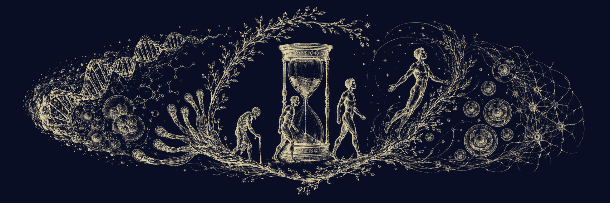
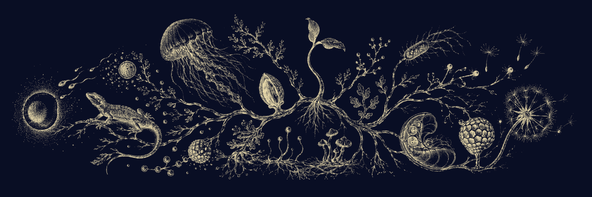
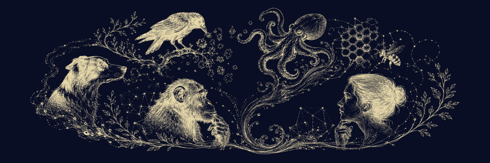

01
Could we copy a human mind?
The fly connectome, the hard problem of consciousness and the question science still does not know how to formulate: what exactly makes you you.
Felden Vareth · Now available
The questions of EIDOS, beyond fiction.
Nine essays of science communication and reflection born alongside EIDOS. Each chapter begins with real research, experiments, technologies or debates to distinguish between what we already know, what we are beginning to understand and what still belongs to the realm of hypothesis.

These essays were born alongside Eidos. Some questions were there from the beginning: what a mind is, what part of us would have to be preserved for us to keep speaking of the same person, how far the body shapes intelligence, or whether life is necessarily tied to biology. Others emerged when those ideas had to work inside a story.
At first they were independent pieces. Then they began to form a journey: each answer opened another question. ESSAYS brings that path together in a single volume, moving from mind and identity to evolution, the body, intelligence, the human condition and technology.
It is not intended as a university textbook or a collection of certainties. It is a book of science communication and reflection for curious readers. Each chapter starts from real research, experiments, technologies or debates and tries to separate what we already know, what we are beginning to understand and what still belongs to the realm of hypothesis.
Science explains how far we have come. Curiosity asks what comes next. Fiction allows us to imagine it.
The journey begins with the mind, moves through longevity, widens its scale toward evolution, returns to the body and to different forms of intelligence, and ends with the question of what it means to be human. M1 closes the circle by returning to the text that stood at the origin of this small side library.
The fly connectome, the hard problem of consciousness and the question science still does not know how to formulate: what exactly makes you you.

Longevity, telomeres, epigenetic reprogramming, senolytics, cryonics and mind transfer: the scientific frontiers of not dying.
From the primitive replicator to digital consciousness: a hypothesis about life, information and the possibility of leaving the biological substrate behind.

How life copies, mixes, resists and travels across generations and environments without depending on a single strategy for continuity.
From hands that made tools to octopuses, artificial perception and soft robots: what happens when the body becomes a design variable.

Why intelligence is not an evolutionary ladder: from dogs, crows and octopuses to human culture and artificial intelligences.
Instinct, belonging, territory, cooperation and culture: what remains of the animal beneath human intelligence, laws and institutions.
Biology, body, consciousness, memory, culture, law and identity: what would have to be preserved if we ever tried to transfer a person.
Memory crystals, DNA storage and real technologies that allow us to ask how much of an imagined material is truly beyond our reach.
The order does not follow the chronology of publication. The mind opens the question; immortality takes it to the frontier of continuity; evolution changes the scale; body and intelligence reveal other ways of engaging with the world; animality and humanity turn the gaze back toward us. M1 closes by returning to the beginning.
The texts were born as independent pieces, and each retains its own question, structure and scientific context. References are gathered at the end of the volume, organised by chapter and by the section of the text with which they were associated.
Science changes. These essays should be read as snapshots of a moment in knowledge: an invitation to distinguish between facts, open frontiers and hypotheses, not as definitive statements.
The relationship between EIDOS and ESSAYS works in both directions. Fiction takes a possibility further than today’s laboratories allow and lets us observe its consequences; science then forces us to return and ask what part of that possibility has real roots.
Fiction does not try to prove that this future will arrive. It creates a place from which to think about what it would mean if it did. The essays then return to biology, neuroscience, evolution, technology, philosophy and, in some cases, faith to examine those questions from outside the narrative. You do not need to have read the novel to follow the journey.
Back to the EIDOS universeNine essays of science communication and reflection gathered in a single volume, with references organised by chapter. Now available on Amazon.